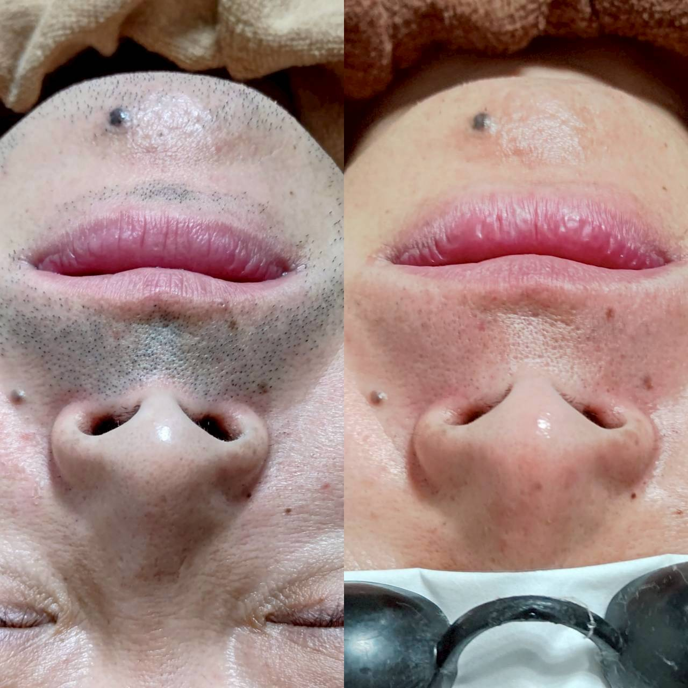

効果を感じにくいと思った時に、まず見直したいポイント

数回施術を受けたあとで、「思ったより変化を感じない」というご相談をいただくことがあります。効果を実感しにくいと感じたときは、いくつか見直していただきたいポイントがあります。
まず確認したいのが、施術の間隔です。毛周期に対して間隔が短すぎたり、逆に空きすぎたりすると、効果を感じにくくなることがあります。次回のご予約が目安の期間から大きくずれていないか、一度振り返ってみてください。
また、自己処理の方法も影響します。毛抜きやワックス脱毛を併用していると、光が反応する毛そのものがなくなってしまい、施術の効果が発揮されにくくなります。普段の自己処理をカミソリや電気シェーバーに切り替えるだけで、変化の感じ方が違ってくることもあります。
効果の出方や実感するタイミングには個人差があります。「思ったより変化がない」と感じたときこそ、遠慮せずスタッフにお伝えください。照射レベルや通うペースを一緒に見直していきます。